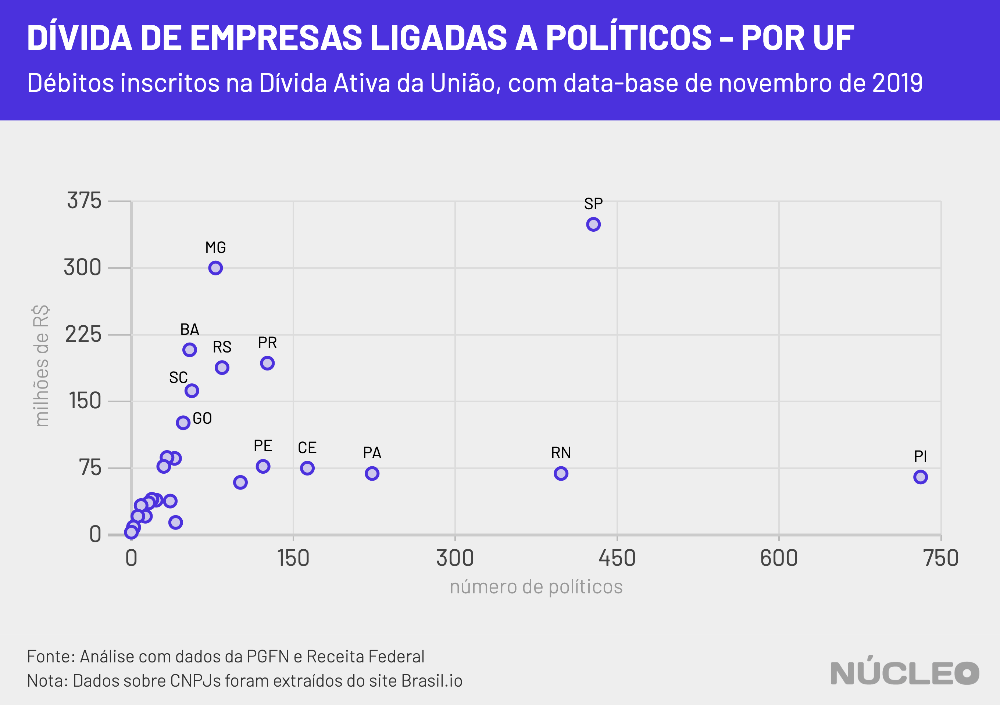
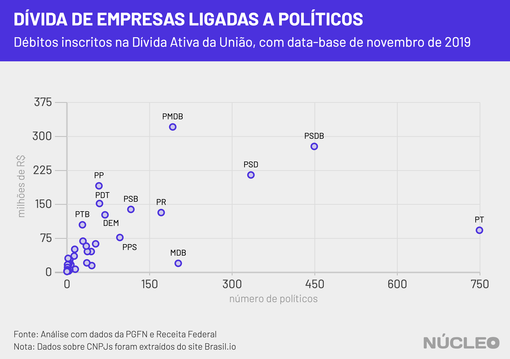

Empresas ligadas a 2.452 políticos brasileiros eleitos – nas quais são sócios, administradores, presidentes ou diretores – possuem conjuntamente R$ 2,8 bilhões em débitos com o governo federal, de acordo com uma análise inédita do Núcleo a partir de dados da Dívida Ativa da União e de CNPJs.
No total, foram identificadas 2.885 empresas distintas, considerando que políticos podem estar ligados a mais de um CNPJ.
A análise só foi possível após a divulgação, pela primeira vez, dos dados da PGFN (Procuradoria Geral da Fazenda) em formato aberto, em novembro de 2019. Anteriormente era possível consultar apenas um volume limitado de registros simultaneamente. Com a abertura dos dados, foi possível fazer um cruzamento amplo e completo, utilizando a base de CNPJs disponibilizada pela Receita Federal e com formato facilitado pelo site Brasil.io.
- Essa é a segunda de uma série de duas reportagens – acesse a primeira aqui.
É importante porque…
-
Políticas de aperto fiscal são definidas e implementadas por autoridades eleitas, e recursos devidos à União podem ajudar a fechar as contas do Estado
-
Políticos definem e implementam legislações de regularização tributária, como o PERT e a MP do Contribuinte Legal. Logo, podem ser partes interessadas em descontos e perdões de dívidas
| posição | nº de políticos | nº de CNPJs |
|---|---|---|
| Sócio-Administrador | 2005 | 2316 |
| Presidente | 324 | 357 |
| Titular Pessoa Física Residente ou Domiciliado no Brasil | 130 | 133 |
| Administrador | 49 | 60 |
| Diretor | 9 | 11 |
| NA | 5 | 5 |
| Sócio-Gerente | 2 | 2 |
| Sócio Comanditado | 1 | 1 |
| Total geral | 2452 | 2885 |
O Núcleo optou por não citar nenhum político nominalmente nessa análise, considerando que os dados são abertos e podem ser consultados livremente. Para os interessados, o cruzamento pode ser acessado e baixado em links no topo desta reportagem ou na explicação metodológica mais abaixo.
A Dívida Ativa da União tem 5,6 milhões de inscritos, segundo os dados da PGFN, totalizando R$ 3,6 trilhões em dinheiro devido. Muitos desses registros, no entanto, estão sob contestação judicial – logo, o montante justamente devido ainda é difícil de ser apurado.
Há no total de 2.627.524 empresas com débitos inscritos na Dívida Ativa da União, com dívidas de R$2,48 trilhões (68,5% do total da dívida). Logo, o montante devido pelos políticos é bem pequeno em relação ao total. Mas isso é significante porque são justamente esses representantes públicos os responsáveis por elaborar e implementar políticas fiscais e tributárias.
Além disso, as empresas ligadas a políticos possuem uma dívida mediana maior do que o conjunto como um todo: R$ 25.993 ante R$ 18.540. Como há uma distância muito grande entre os valores mínimo e máximo dos débitos, a mediana é uma forma melhor de compreender o conjunto como um todo, dado que a média ficaria distorcida.
O prazo médio da dívida de políticos é também relativamente mais novo, de 6,8 anos, frente a 7,9 anos do conjunto inteiro.
A Dívida Ativa da União inclui o débito de qualquer valor ao governo – seja impostos, taxas ou multas. Na falta de pagamento desses débitos, órgãos federais solicitam a inscrição na dívida ativa.
- Acesse a cartilha detalhada sobre como funciona a Dívida Ativa da União
- Saiba como regularizar uma dívida
Recortes de dados
Fazendo um recorte por unidade federativa, conseguimos observar que o Piauí é o Estado de origem com maior montante de recursos inscritos na dívida ativa quando consideramos apenas políticos eleitos. Isso acontece por conta de diversas dívidas inscritas da companhia de saneamento do Estado, a Agepisa.

A dívida inscrita da Agepisa é refletida, então, quando somamos por partido. Como o diretor presidente da Agepisa é do PT, a dívida inscrita ligada a um de seus representantes fez disparar o montante agrupado por legenda.
Por se tratar de dados abertos e de uma constatação alcançada a partir da soma simples de ocorrências desses dados, sem inferências, o Núcleo não entrou em contato com a empresa para esclarecimentos.

- Acesse os dados tabelados dos gráficos aqui
- Acesse a base de dados organizada pelo Núcleo
Como fizemos isso
O código que embasou essa reportagem pode ser encontrado neste link.
As informações de políticos eleitos foram obtidas por meio da biblioteca cepespR, compilada pelo CEPESP (Centro de Estudos em Política e Economia do Setor Publico) da Fundação Getúlio Vargas, que organiza e disponibiliza dados do Tribunal Superior Eleitoral.
Os resultados dos cruzamentos de informações da PGFN e de políticos podem ser conferidos na página de bases de dados do Núcleo, tanto agregados por políticos quando dívida por dívida.Os dados podem ser acessos integralmente neste link, no qual é possível aplicar filtros e ver mais detalhes.
Os números de CPF e nomes de políticos eleitos em 2018, 2016 e 2014 (neste último caso, apenas senadores) foram comparados com parte do CPF e nomes de devedores da União, publicados pela PGFN.
A base de sócios foi compilada do site Brasil.io, de Álvaro Justen.